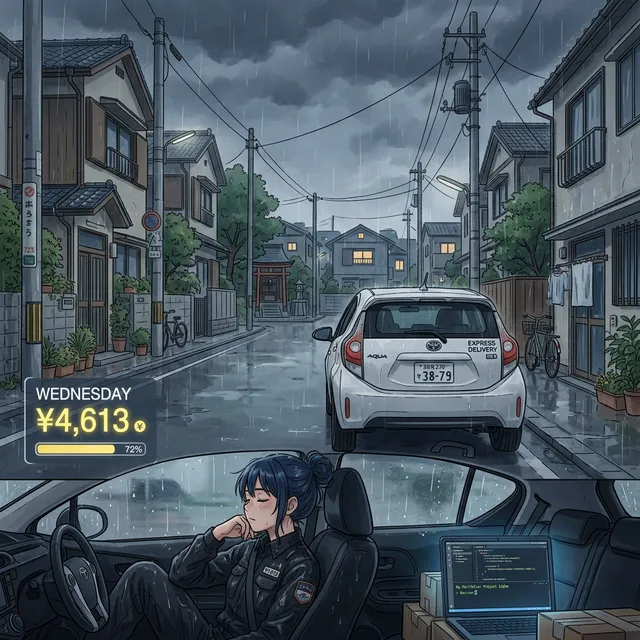

🏥 体調不良でも止まらない：¥4,613、短時間稼働の火曜日 × Webポータル開発始動（2026年3月3日）

こんにちは、玉配達員AHです。
W4に入りましたが、実は2/28から体調を崩していました。咳と倦怠感でフル稼働は厳しい状態。それでも少しだけ走った火曜日の記録です。
ちなみに、体調を崩してから配達に出られない時間を使って、AIエージェント「Antigravity」と一緒にWebポータルサイトの構築を始めました。配達データの分析・ブログ記事の自動生成・パチンコツールなど、副業の「もう一つの柱」づくりが進行中です。
※この記事はAI（Antigravity）を活用して作成しています。
📊 3/3(火) 稼働実績サマリー
| 項目 | 合計（Total） | 正味（Net） | プロモ（Promo） | チップ（Tip） |
|---|---|---|---|---|
| 売上金額 | 4,613 円 | 3,413 円 | 1,200 円 | 0 円 |
| 配達件数 | 7 件 | - | - | - |
| オンライン時間 | 2 時間 35 分 | - | - | - |
| 時給換算 | 1,786 円 | 1,322 円 | 465 円 | 0 円 |
| 件数単価 | 659 円 | 488 円 | 171 円 | 0 円 |
※上記データは画像解析とAI（Antigravity）支援により、実績画面から詳細内訳を自動抽出・計算したものです。
前週比較：W3火曜 vs W4火曜
| 項目 | W3 (2/24) | W4 (3/3) | 差分 |
|---|---|---|---|
| 売上（合計） | 13,151 円 | 4,613 円 | -8,538 円 |
| 正味 | 10,751 円 | 3,413 円 | -7,338 円 |
| プロモ | 2,400 円 | 1,200 円 | -1,200 円 |
| 件数 | 23 件 | 7 件 | -16 件 |
| 時間 | 9h09m | 2h35m | -6h34m |
| 時給（合計） | 1,437 円 | 1,786 円 | +349 円 |
| 件数単価（合計） | 572 円 | 659 円 | +87 円 |
現場での気づきとAIによる考察
1. 体調不良による大幅縮小
稼働時間2時間35分は、通常の火〜木曜日（9〜10時間）の約1/4。体調が回復しきらない中で「少しでも稼働する」という選択をしましたが、無理せず短時間で切り上げています。
2. 短時間でも効率は前週超え
時給¥1,786はW3火曜の¥1,437を+349円上回る結果に。件数単価¥659もW3火曜の¥572から改善。量は大幅に減りましたが、短時間集中の効率は高い水準を維持しています。
3. 「休む勇気」と「別の収入源」
W4で配達を大幅に減らせた背景には、2/28からAntigravity（AIエージェント）と始めたWebポータルサイト構築があります。パチンコEV計算機、機種データベース、ブログ自動生成——「体が動かなくても頭で稼ぐ」仕組みづくりが動き出しました。体調不良がきっかけで、副業のマルチストリーム化が加速したとも言えます。
🏥 体調不良でも完全停止しない
¥4,613は過去最低水準ですが、「ゼロにしなかった」ことに意味があります。そして、配達以外のプロジェクトが同時進行していることで、精神的な余裕も生まれています。明後日の木曜、もう少し頑張れるか。